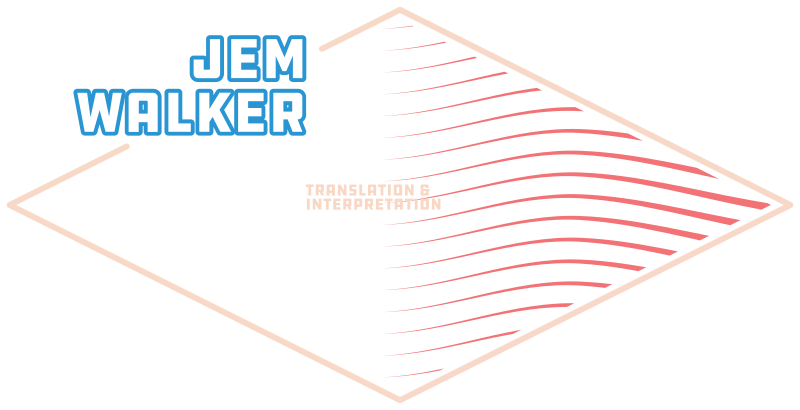

CAT MINI-PORTFOLIO
This mini-portfolio is the product of a semester-long course in the field of computer-assisted translation (CAT), and demonstrates some of the skills I acquired over the course of the class. It will highlight some important principles in CAT and its applications within the translation industry. It will examine specific examples, as well as a case study of a project completed towards the conclusion of the class.
Case Study: Atlantic News Online, Inc.
In the scenario of this project, a fictitious client, an English-language news site looking to expand into a Francophone market, approached our group to commission the translation of five news articles in order to establish an archive. As well as the articles themselves, deliverables included a translation memory and termbase. More information is available in the project files linked below.
RegEx tips
RegEx stands for Regular Expressions, a series of common codes used for the purposes of searching long strings of text in a flexible and customizable way. In the translation field, RegEx can be very useful in larger projects for quality control, when the translator needs to make quick corrections to many errors which cannot necessarily be found by searching a simple text string.
Using RegEx, a user can substitute a short code for a certain type of character in the text string to be searched. For example,
\d would return all numeral (digit) characters. More examples and a tool to learn more can be found at
regexr.com.
RegEx can be applied in a variety of scenarios specific to translation between French and English. For example:
1. Quotation marks (guillemets)
Rule: [«»]
Direction: French to English
This expression allows the translator to identify the use of French quotation marks or guillemets (« ») in a text. This is very important for a translation from French into English because English uses a different set of quotation marks (“”).
In an instance where guillemets may have found their way into an English target text, this expression finds them so that they can be replaced with standard English quotation marks.
2. 24- vs 12-hour times
Rule: \d{1,2}:\d{2}\s?[apAP]\.?[mM]\.?
Direction: English to French
In France, as in most territories of the world, time is most commonly expressed in a 24-hour format. When translating from English into French it is important to convert the time from the American 12-hour format into 24-hour. This expression will identify any instance of time that was accidentally overlooked in the translation process, and accounts for the presence or absence of periods in A.M. and P.M as well as variations in case.
3. Overtranslation of phone numbers (conversion to French format)
Rule: (0\d)\s?(\d{2})\s(\d{2})\s(\d{2})\s(\d{2})
Direction:English to French
This expression identifies all phone numbers written in the French format.
Let’s imagine that a translator is working between a British-English text and a French one, and accidentally overtranslates by converting a British phone number into the French format. While this expression identifies all phone numbers in the French format without being able to determine which are "correct" and which are not, it can be used as a starting point for a translator to double-check their work.
4. DD/MM date format
Rule: (\d{0,2})\/(\d{0,3})\/(\d{2,4})
Direction: English to French, French to English
The difference between American and French (European) date formats can prove troublesome. The Americans use MM/DD/YYYY and the French use DD/MM/YYYY. This expression will identify all dates written in either format. In many cases, there is no way to say for sure whether a date is in one format or the other (which is why confusions can come about so easily) but this expression, like the previous one, can be used to produce a list of all dates in a text for careful verification.
5. French typography rules (e.g. the espace insécable)
Rule: (\D)([?;:!%°])
Direction: English to French
French grammar requires an espace insécable (unbreakable space) before certain punctuation marks including ? ; : ! % and °. As this concept does not exist in English grammar and unbreakable and regular spaces look identical unless hidden characters are shown, this small detail can be easily overlooked when working between these two languages.
This expression will identify instances in a French translation where the espace insécable has been replaced by a regular space, allowing the translator to quickly locate and fix this error.